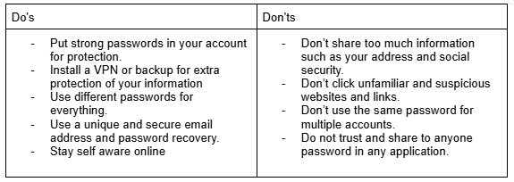
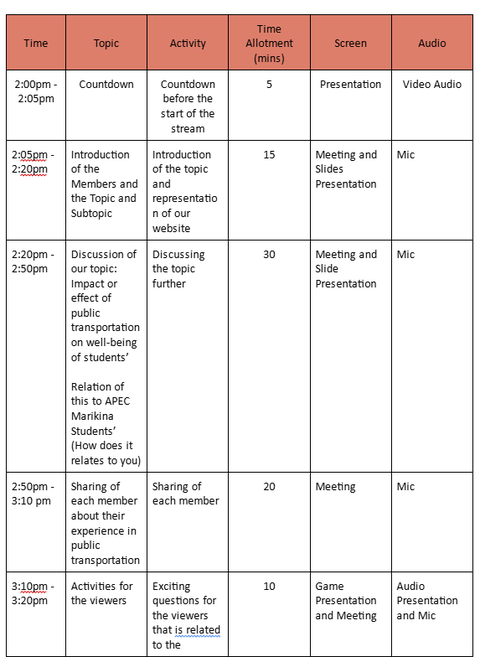

Quarter 2
EG 8-9: Streaming Tools
Experience 1
-
Worksheet Link:
Link to EG 8-9 Worksheet
Checkpoint 1
-
What types of broadcasting software can we use for our stream? (Miguel)
For our research (The Ideal Choice of Public Transportation for APEC Marikina Students), we can use OBS Studio for online streaming. While apps like Facebook, YouTube, and Instagram provide basic live streaming options using a device’s camera and mic, OBS Studio allows advanced editing and live-streaming features. For mobile or tablet streaming, we can use Streamlabs. Conclusion: Facebook will be our platform, with OBS Studio as the software app. -
What are the initial steps if you want to stream using a Chromebook? (Apple)
- Ensure a stable internet connection.
- Choose a live streaming tool.
- Set up the camera and microphone.
- Monetize your stream. -
What are the steps for using OBS Studio for streaming? (Raibert)
- Download OBS and install the appropriate build for your device.
- Set up a source (e.g., display capture, game capture).
- Adjust the source resolution to fit your streaming output.
- Configure audio and video mixers.
- Link OBS to your chosen platform via the stream settings.
- Once ready, click the “Start Streaming” button.
Experience 2
-
I. Different audio and video equipment for streaming (Nina):
Laptop, headphones with microphone for minimal noise. -
II. Internet speed requirement to stream (Earl):
- OBS: 3.2 to 5 Mbps
- Facebook Live: 4 Mbps -
III. System requirement when streaming using phone/computer (Sofia):
Phone: Android 5.0+ or iOS 8+, stable internet, and a phone mount.
Computer: Windows 7+, 2 GHz dual-core processor, 8 GB RAM, 7200 RPM hard drive, webcam, microphone, and stable internet.
Checkpoint 2
-
What basic equipment is needed to stream? (Earl)
A streaming platform, software, mobile device with audio/video, and stable internet. -
What are the requirements when streaming from a phone/computer? (Miguel)
Phone: Charged device, good signal, microphone (if needed), and streaming app.
Computer: Working PC, keyboard/mouse, good internet speed, and hardware tailored to content type (e.g., microphones for podcasts, high-spec PC for gaming). -
What internet speed requirement do you need to stream seamlessly? (Sofia)
Minimum 3 Mbps, ideally 11 Mbps. -
What will you do if the equipment you have on hand is not working? (Nina)
Look for backup or alternative equipment to continue streaming.
Synthesis
-
Differentiate each broadcasting software. (Apple)
- OBS Studio: Best for experienced streamers.
- Streamlabs OBS: Beginner-friendly.
- XSplit: Ideal for gamers.
- vMix: Premium professional features.
- Restream: Multistreaming support.
- OneStream: All-in-one streaming platform.
- Twitch Studio: Streamlined for new Twitch users. -
If you were to stream a Mukbang, what tools and equipment would you need? (Raibert)
- Equipment: Quality microphone, lighting, decent camera, gloves, utensils, containers.
- Enhancements: Audio mixer apps for food sound effects.
- Additional: Eye-catching food presentation.
EG 10: What's your Content?
- Brainstorm with your groupmates the type of streaming content you will have.
- Use the ideate tools to decide.
- Make sure everyone in the group is interested in the content type that you will choose.
- Document your brainstorming on your Portfolio (Group Google Docs).
- Submit your work in Google Classroom.
Experience 1
Answer: Educational video about public transportation chosen by the majority of the respondents of quarter 1 survey.
Checkpoint 1
-
Describe how the ideate tools help you in choosing the content for your stream.
The ideate tools help us to prioritize our content ideas for the stream by visualizing and organizing concepts related to our topic. (Apple)
-
What factors did you consider when choosing the type of content to stream?
The target audience and our content's purpose. (Nina)
-
What do you think will be the challenges of your chosen content?
Since our chosen content is about public transportation, there are a lot of challenges that will be faced. There is a possibility that while discussing the differences between various types of public transportation, we might say something that might trigger some of the audience and make it a big deal. (Sofia)
Experience 2
- Write a paper as if you are trying to sell your stream.
- You can include your goals for the stream, such as the number of viewers, number of hours, topics and discussions, etc.
- Make sure that your goals are S.M.A.R.T (Specific, Measurable, Achievable, Relevant, Time-Bound).
- You can also answer this question to help you write your paper: “What would I like my stream to be? What do I need to expect?”
- Submit your work in the Google Classroom.
Link: View Document
Checkpoint 2
-
Explain in 5 sentences the goals you want your stream to be.
- To be an entertaining stream that is welcome to all with fun activities and an impactful message. (Raibert)
- Our goal for the stream is to create meaningful interactions with our target audience while successfully conveying the message of our content. (Earl)
- Our goal in our stream is to educate and to entertain our target audience. (Apple)
- To serve as a source of inspiration for others who are considering starting their own streams or ideas that they have collected from viewing ours, our stream offers more than just informative content; it is also fun because we incorporate activities that our viewers will find enjoyable.
- To serve as educational and useful to the viewers, helping them earn knowledge and information while also entertaining them.
-
How will you make sure that your content is suitable for any age in a way that no age group will be bored?
We can make sure that our content is suitable for any age by creating relatable content for any age group. To create content that is not boring, we want to make sure that our content is interesting and educational. (Earl)
Synthesis
-
Differentiate the different ideate tools.
Although the tools of mind mapping, 5 whys, and fishbone diagram all lead to a conclusion to a problem, the main differences lie in their structure. Mind maps are more versatile and can have abundant connections, while fishbone diagrams are more organized and specific with the order of the problems, and 5 whys is the most efficient as most problems done with this method usually have the root identified at the 5th or 7th question. (Raibert)
-
Which tool was the most helpful to you during the activity?
The design thinking template was the most useful tool during the activity. It helped us fully understand the problem we wanted to tackle and taught us how to effectively connect with our audience by helping us brainstorm effective solutions. (Earl)
EG 11: Stream Design
- #343a40
- rgb(34, 40, 44)
- #F9D94A
- #E9EBEE
- White
- Black
Experience 1
1. Brainstorm with your groupmates on the theme that you want for your Stream.
2. Read the wiki of the Elements of Design to know how you are going to create your design aligned to your chosen theme.
3. Consider the color palette and font style.
4. Put your work on Google Slides.
5. Submit your work in Google Classroom.
Color scheme:
Font: Quicksand, Days One
Checkpoint 1
-
Explain why your theme and color scheme matches your content. (Sofia)
We chose this color scheme since these colors can be seen in the signage of public transportation. It also showcases the color of the road where public transportation usually operates. -
What challenges did you face while deciding on the theme and color scheme? (Raibert)
The challenges we faced while making the color scheme and theme were finding the exact hex codes for each color and the pixel alignment with the different designs in the website.
Experience 2
- Use Google apps, Canva, or any editing website or application to design your stream.
- You can get inspiration from famous streamers but make sure that you do not copy theirs.
- You can add overlays, series, games, alerts, and timers, such as webcam, webcam borders, followers, subscribers, sponsorships, logos, and gifs.
-
You can refer to the following sites:
- How to Design Your Twitch Stream
- Stream Overlays
- Customizing the Livestream
- Submit your work in the Google Classroom.

Canva Link: Link to Canva Design
Checkpoint 2
-
What are the designs you decided to add to your stream? (Nina)
Border: To let the viewers notice the design related to the stream's content and be informed. -
Explain the purpose of why you added those designs. (Apple)
The purpose of adding these designs is that they are related to our streaming content and are visually appealing to our viewers.
Synthesis
-
What helped you choose and decide on a color palette? (Earl)
Our color scheme was heavily influenced by our content, which revolves around public transportation. Since public transportation often includes bright colors, we wanted to include this style in our stream design. -
What are the factors you consider when choosing and deciding on a theme? (Sofia)
The factors I consider are closely related to our topic of public transportation, which plays a vital role in the daily lives of many Filipinos. As you can see in the lower part of the template, the building symbolizes urban development and the importance of accessible transport systems in connecting people to essential services. Meanwhile, the presence of jeepneys, a popular mode of public transport in the Philippines, signifies the rich cultural heritage and the unique challenges faced by commuters.
EG 12: Guidelines to keep in Mind
- What was violated: Joelle’s private information
- Why it was violated: Since she answered a survey by a survey company which she was randomly selected
- What the victim should know: The victim shouldn’t trust the company that easily, especially if she was just randomly selected. It is important to do research about the company before entrusting personal information to them and to not jump to conclusions since it could be spam.
- The punishment to be given to the violator: If it's determined that the company purposely or recklessly shared her information, the organization could face financial penalties or fines, depending on the crime committed. The company's reputation is also damaged, affecting customer trust.
- What was violated (Apple): Drew’s personal identity
- Why it was violated (Apple): He posted her driver's license, and someone used it as proof of identification to scam buyers.
- What the victim should know (Raibert): Personal information, especially government credentials like a driver's license, should be kept private. This information can harm the victim by enabling identity fraud and malicious actions. In Drew's case, his information was used to create a fake virtual store for scamming victims.
- The punishment to be given to the violator (Raibert): The violator could face imprisonment and fines ranging from Php500,000 to Php2,000,000 for unauthorized processing and breach of sensitive data. Penalties include:
- Unauthorized processing of personal sensitive information: 3-6 years imprisonment and fines of Php500,000 to Php4,000,000.
- Unauthorized access or intentional breach: 1-3 years imprisonment and fines of Php500,000 to Php2,000,000.
- What was violated: Ivanne’s rights to her identity.
- Why it was violated: The violation occurred when her stream was recorded and posted on another social media platform without her consent.
- What the victim should know: The victim should be aware of their rights and know that it’s important to talk to someone about their experience if they feel their rights are being violated.
- The punishment to be given to the violator: Depending on state laws, penalties for cyberbullying can range from school suspension to jail time. Unauthorized sharing of personal information can lead to imprisonment (3-6 years) and fines (Php500,000 to Php4,000,000).
Experience 1
1. Read and assess the given situations.
2. Determine:
Situation 1 (Sofia):
Situation 2 (Apple & Raibert):
Situation 3 (Earl & Nina):
As a minor, complete the table below by listing down the do's and don'ts in streaming based on what you have learned from the Data Privacy Act. (Sofia, Nina, Apple, Earl, Raibert)
Checkpoint 1
-
Why is consent important and highlighted in the Data Privacy Act? (Earl)
Consent is important because it ensures that the right to privacy is not violated and helps establish boundaries for data usage. -
Explain the importance of the Data Privacy Act. (Apple)
The Data Privacy Act empowers individuals to maintain control over their personal information. -
Explain how the Data Privacy Act protects you. (Nina)
Data privacy defines who has access to data, while data protection provides tools and policies to actually restrict access to the data.
Synthesis
-
Explain the provisions of the Philippines’ Data Privacy Act. (Raibert)
The provisions of the Philippine Data Privacy act ensures the regulations and guidelines of individuals possessing, processing, collection, and privacy of personal data. The act implements security measures to protect the confidentiality, security of personal information for lawful purposes. -
How would the Data Privacy Act affect streaming? (Sofia)
The Data Privacy Act is crucial for streaming services because it helps protect users' personal information. These laws set rules on how companies can collect and use data, ensuring that consumers are aware of what happens to their information. Data privacy acts make sure these companies are clear about what data they collect, how they use it, and who else might see it. This transparency is crucial because it helps build trust between consumers and streaming services. These laws also enforce penalties for companies that break the rules, motivating them to take data protection seriously. This not only keeps user information secure but also encourages services to develop features that prioritize user privacy.
EG 13: Stream Outline
- Create a detailed outline of the events, topics, and discussions that you want to cover in your stream.
- You can do any format of the outline, such as flow charts, mind maps, storyboards, etc., as long as it is clear enough to understand. You may also follow this format if you want:
- (All)
- You may refer to these guide questions to help you start planning.
- Submit your work in Google Classroom. 
Experience 1
Checkpoint 1
- What are indicators that your outline is realistic? (Nina)
If the activities can be “realistically” achieved in the time allotted for the activity. - How did your group decide what events to put in your stream? (Earl)
We decided the events to be put in our stream by brainstorming events that can be engaging and insightful. - Is your outline inspired by other streamers? Who are they? (Raibert)
Yes, our stream is inspired by various streamers. Our Stream countdown and Q&A were inspired by my friend Jacob from APEC Ortex, who had their IPBA stream earlier, and I just so happened to stroll by their stream. - What if your stream did not go according to your plan? How will you deal with it? (Apple)
If our stream doesn't go according to our plan, we stay calm and we need to do something to solve the problem of our stream and continue the discussion of our topic.
Experience 2
- Create promotional materials, spiels, and social media accounts you will use to promote your stream.
- Create an outline of your promotional plan.
- Compile all the promotional materials such as videos, posters that you will post on social media, etc.
- Submit your work in Google Classroom.

Canva Link: Link to Canva Design
Checkpoint 2
- How will you promote your stream? (Sofia)
By sharing our poster through our social media, such as Instagram or Facebook. Furthermore, we plan to create a FB Page where we can inform our viewers about the context of our stream and much more. - What are your main ways to promote? (Sofia)
As mentioned above, through the use of social media and by creating a FB Page. - How will you make sure that your plan to promote your stream is effective? (Earl)
We must first ensure that the stream reaches our target audience through our social media accounts before the stream date to ensure effective promotion. Furthermore, we must ensure that our streams are easily available and that our content goes beyond just streaming. - How do you plan to promote your stream to your target viewers? (Nina)
By sharing the stream with our friends, classmates, or family through social media. - Which of the promotional materials you have done do you think will be the most effective? (Apple)
I think engaging social media posts with interactive elements will be the most effective promotional materials for our stream.
Synthesis
- How does outlining help in planning your stream? (Raibert)
It helps by giving every member a guide on how the stream should flow. Each step in the outline serves as the basis for what will happen during the stream. It is essential because it is the foundation for whether your stream will be entertaining and interactive with its audience. - What is effective promotion? (Apple)
Effective promotion carefully targets the audience with persuasive messaging. It raises awareness, sparks interest, and encourages desired behaviors, such as higher viewership and engagement.
EG 14: Document it on your Website
Checkpoint 1
- How was your experience in creating a web design? (Nina)
It was a mixed experience. The brainstorming of ideas and designs feels great, but in terms of regulations, we have to be mindful and considerate to our team's coder. - What are the challenges you encountered? What are the steps you took to overcome them? (Sofia)
When creating a web design, we encountered various challenges. This includes choosing the right color scheme that we would apply to our website, which is related to our topic. Moreover, finding the layout of the website was one of the challenges we faced. We plan to make the website look neat and organized to catch the interest of the audience. But we were able to solve this problem through the use of online websites that guide us in finding the right layout and color scheme. - Which of the design elements do you think is your strength? Why? (Earl)
I believe that our usage of complex color schemes and graphics from public transportation are our strongest design features. These elements communicate and introduce our topic effectively because our target audience will already have an idea of what our topic will be about. - Which of the elements is your weakness? Why? (Raibert)
I would say the F and Z patterns as they required us to restructure our website to fit the format in which the viewers would lay their eyes upon. Lastly, the color scheme was also a weakness as it is dependent on other factors, such as our stream.
Synthesis
- What will happen if you fail to document your plan? (Apple)
Failing to document your plan may result in chaos and a lack of clarity. This can hinder your ability to monitor your progress, assess your effectiveness, and make well-informed decisions regarding your upcoming streaming pursuits. - How important is documentation in streaming? (Nina)
By documenting your streaming progress, you can elevate your content, build a stronger community, and enhance your overall streaming experience. The information gathered from documentation helps you stay focused and organized during your stream.
-------------------------------------------------------------------------------------------------------------------------
THAT'S ALL FOR QUARTER 2!
THANK YOU!